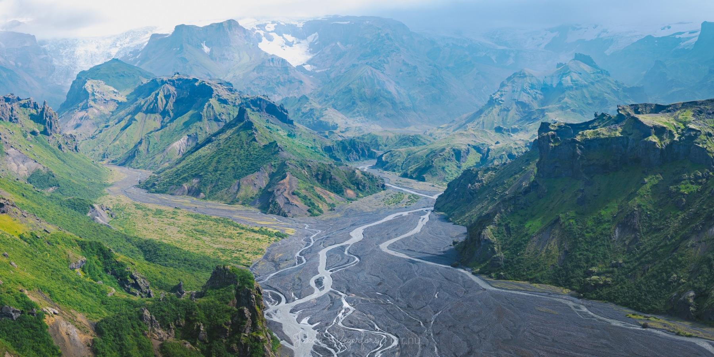
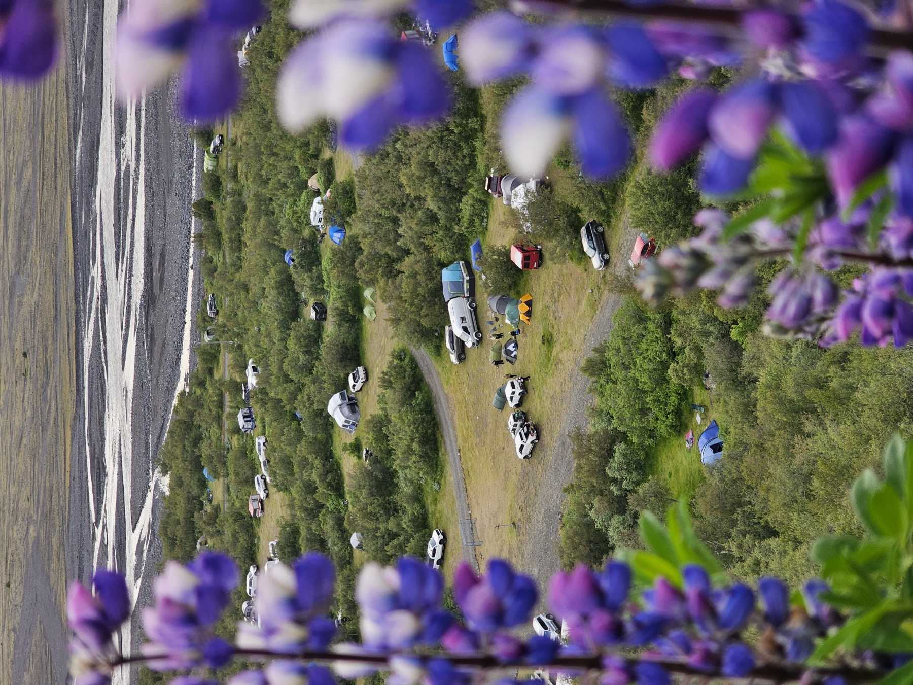
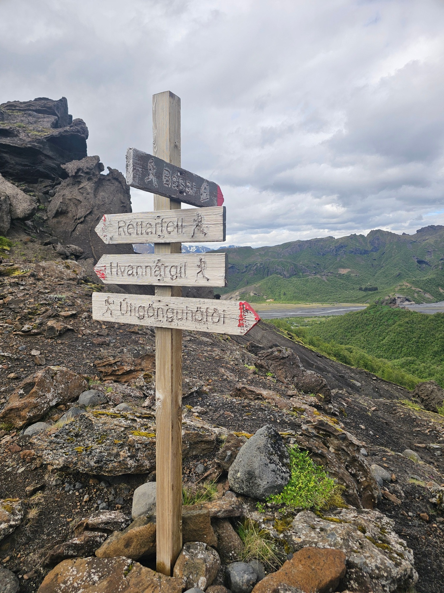
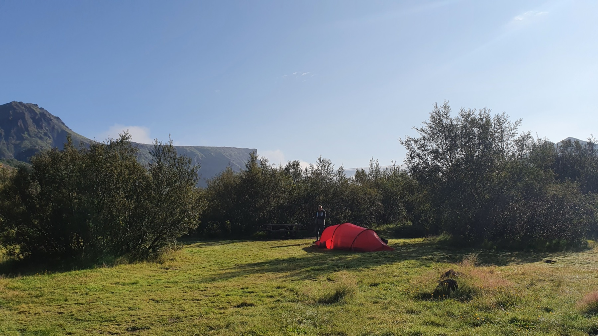
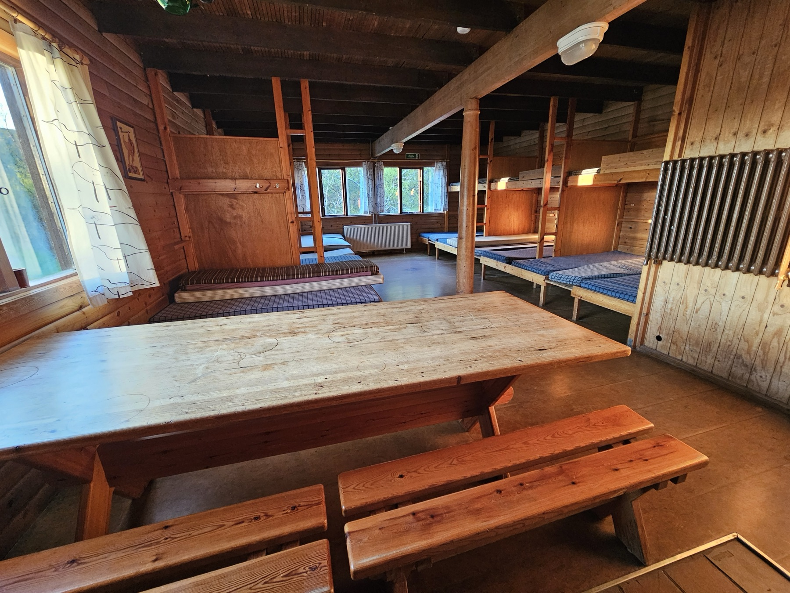
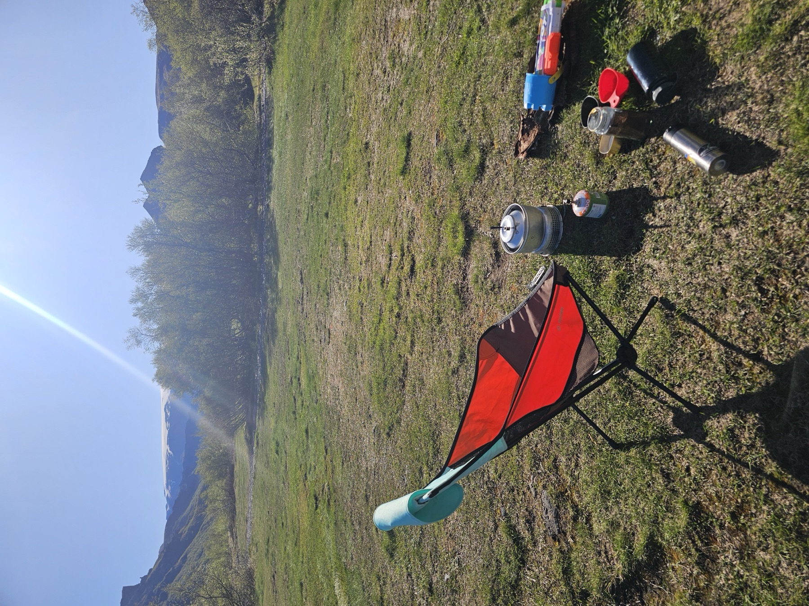
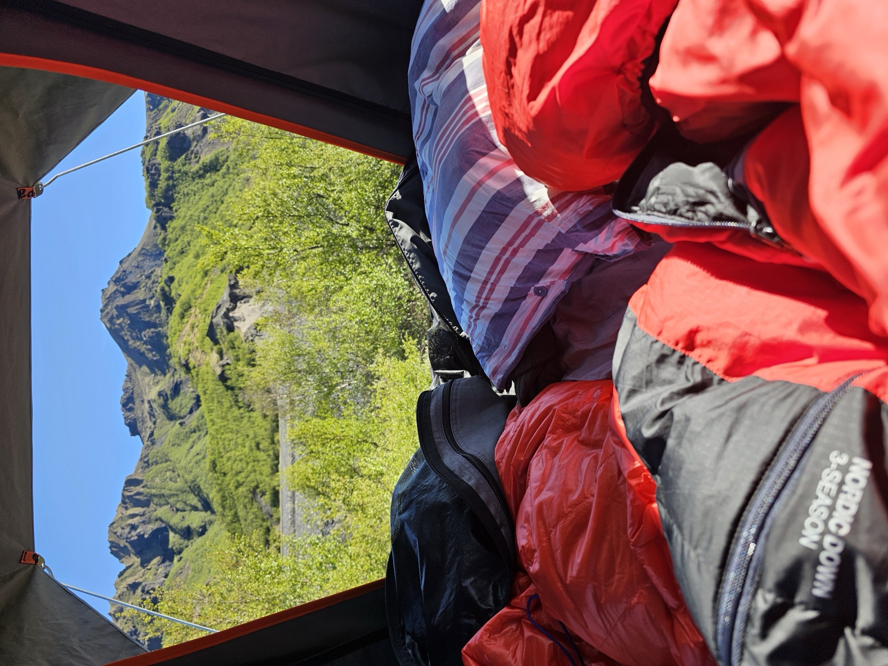
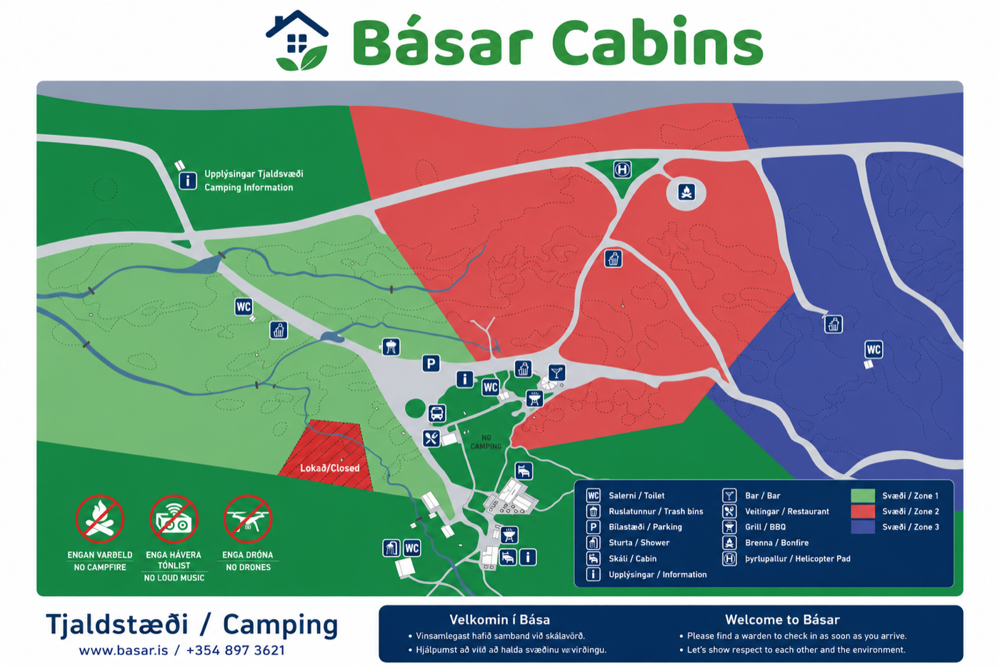
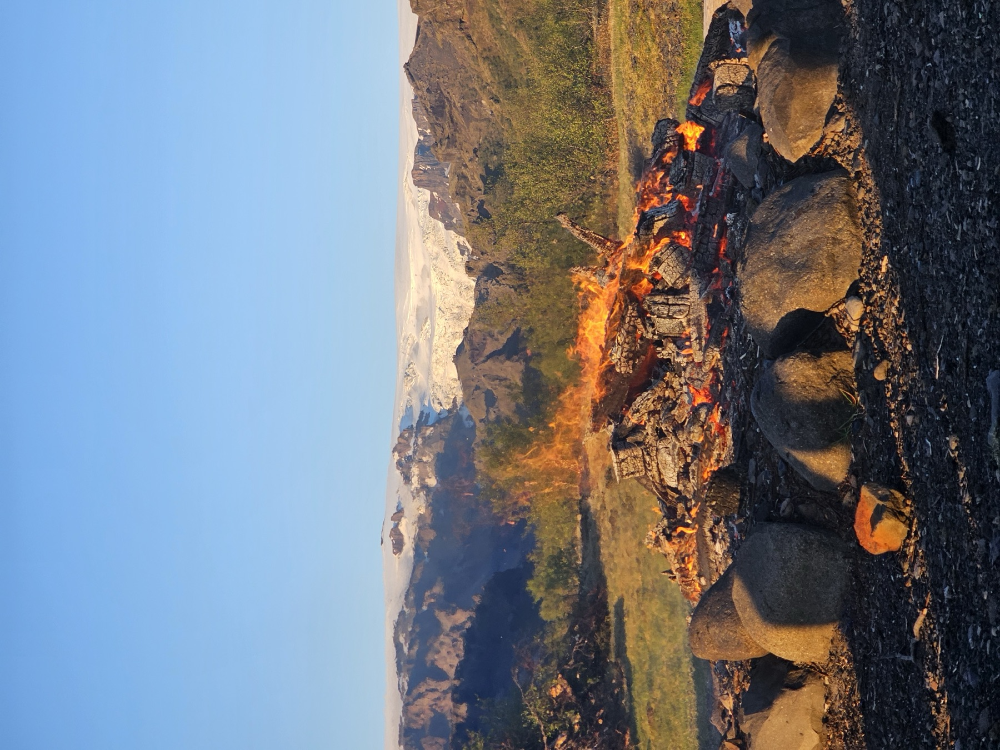

Skáli og tjaldsvæði í birkiskóginum, umkringt þremur jöklum. Rólegt hjarta einnar fegurstu gönguparadísar Íslands.
Básar standa í sjálfsánum birkilundi á jaðri Krossáraura — einum grænasta reit íslenska hálendisins. Hér er engin verslun, enginn vegur fyrir venjulega bíla og enginn asi.
Tjaldaðu á grasinu, eldaðu á sameiginlega grillinu, drekktu beint úr læknum og skildu mosann eftir eins og þú fannst hann. Það sem þú berð inn, berð þú aftur út.


Allar leiðir hér byrja við skáladyrnar. Veldu eftir tímanum sem þú hefur — frá klukkutíma um birkið upp í heilan dag yfir jökulskarð. Leiðaleit eftir tíma og erfiðleika er væntanleg.
Tvær leiðir til að sofa — undir tjaldhimni á enginu eða í koju í gamla timburskálanum.

Tjaldsvæði opið júní til september. Ekki þarf að panta fyrirfram — farið er í afgreiðslu og greitt við komu í Bása. Salerni og sturtur eru í þjónustuhúsinu yfir sumartímann.

75 gistipláss í skálum, með dýnum, stóru sameiginlegu borði og setustofu. Taktu með þinn eigin svefnpoka. Innskráning eftir kl. 14, skálinn rýmdur fyrir kl. 11.
Salerni fyrir skálagesti allt árið, auk salerna og sturtu í þjónustuhúsinu fyrir alla gesti á sumrin. Sturtur eru gjaldfrjálsar fyrir skálagesti; tjaldgestir greiða 1.000 kr (550 kr félagsmenn).
Sameiginlegt eldhús með helluborði, eldunaráhöldum og borðbúnaði, auk kolagrills. Taktu með allan þinn eigin mat — næsta verslun er á Hvolsvelli.

Vaknaðu við fuglasöng og jöklasvala, hitaðu ketilinn í grasinu og leyfðu deginum að byrja hægt.
Beygt er út af þjóðvegi 1 rétt austan Markarfljóts inn á veg 249, sem breytist við Stóru-Mörk í F249 Þórsmerkurveg. Vegslóðinn liggur inn fyrir Álfakirkju og að Básum, yfir nokkrar jökulár sem eru aðeins færar jeppum og stærri bílum. Nær allir koma með fjallarútu. Kannaðu færð hjá Vegagerðinni í síma 1777 áður en þú leggur af stað.


Enginn varðeldur, engin hávær tónlist og engir drónar á svæðinu — hjálpumst að við að halda kyrrðinni fyrir alla.

Þegar sólin sest bak við Eyjafjallajökul verða ókunnugir að hring. Taktu með lag, sögu eða bara þreytta fætur.
Aðeins takmarkað rafmagn frá ljósavél — nóg fyrir ljós en ekki til að hlaða öll tæki. Taktu með hleðslubanka.
Já — lækjarvatnið er tært, kalt og óhætt að drekka beint. Engar flöskur nauðsynlegar.
Nei — tjaldsvæðið er fyrstur kemur, fyrstur fær. Aðeins kojur þarf að bóka.
Já, í bandi og utan skálanna. Haltu þeim fjarri varpfuglum og sauðfé.
Það eru engar ruslatunnur á hálendinu. Allt sem þú berð inn berð þú aftur út með þér.
Stopult í besta falli. Láttu einhvern vita um áætlanir þínar áður en þú kemur og njóttu þess að vera ónáanleg.